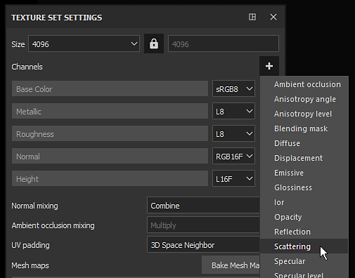
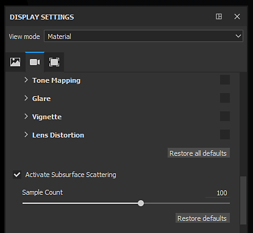
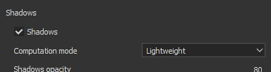

Enabling Subsurface in a Project
To activate properly the Subsurface scattering in Substance 3D Painter a few parameters have to be set first.
This page provide a guide on which parameters to enable.
1 - Texture Set Settings
In the Texture Set add a Scattering channel if not already present :

2 - Global Subsurface Setting
Enable the main Subsurface scattering setting in the Display settings (below the Post-Effects settings) :

3 - Shader Settings

In the Shader settings window with default shaders can be found a " SSS Parameters " group with two settings.
Change the scale and the color to fit the target material. For more details on these settings see: Subsurface Parameters
Bonus : Enabling shadows
The Subsurface scattering effect works well but may look strange if alone.
Enabling shadow can help the final look in the viewport and improve the realism of the final material.
In the Environment settings window, enable the " Shadows " setting:
